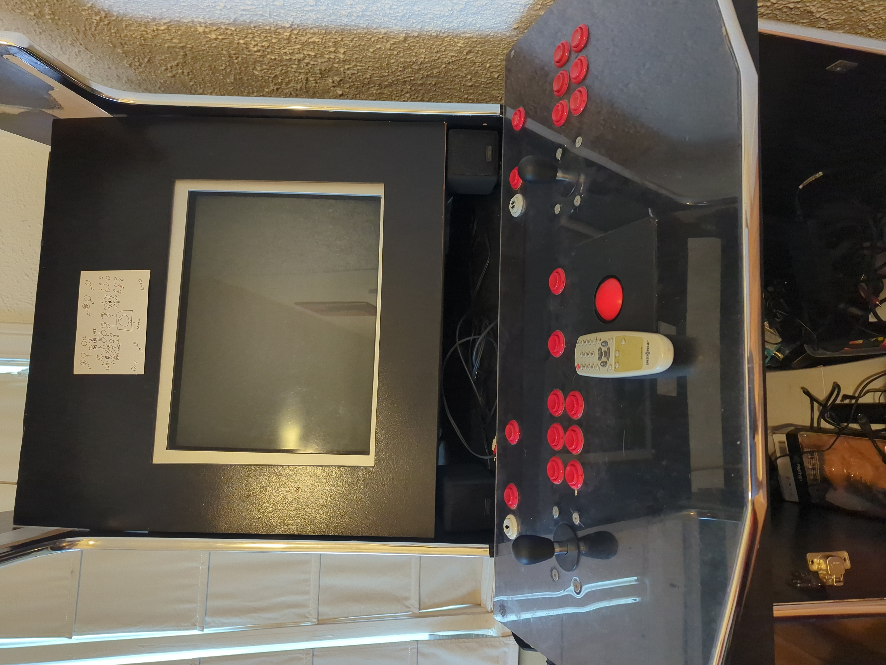
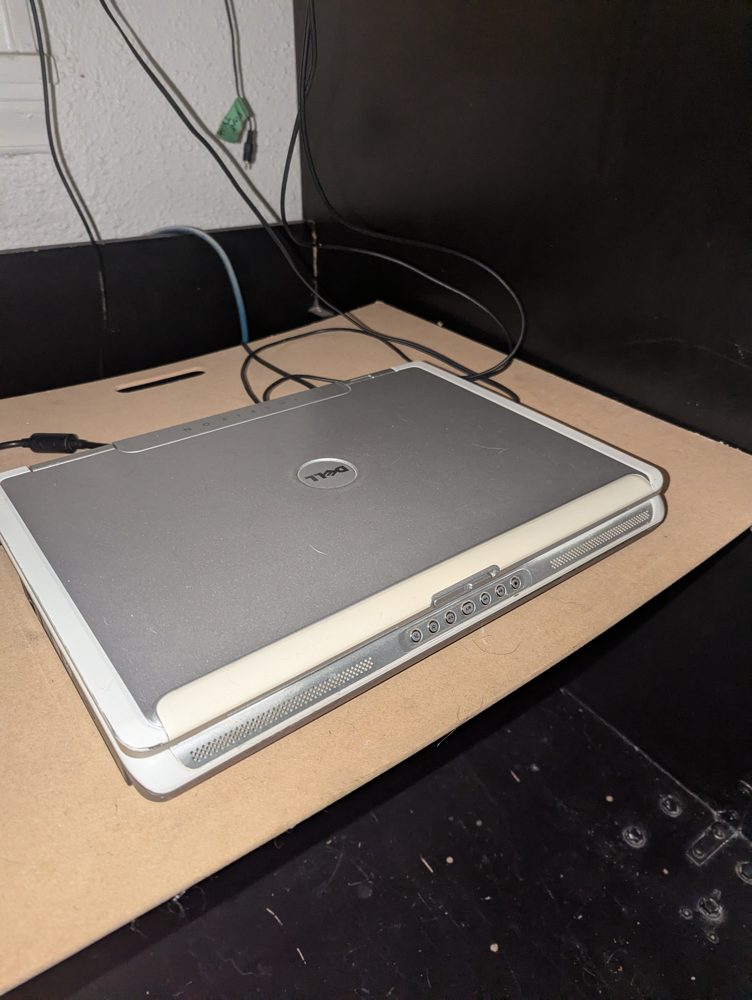
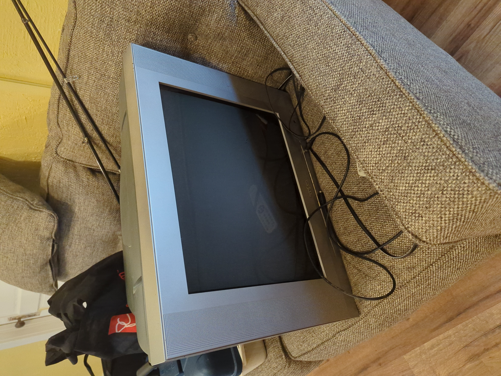

Fig. 5-1: Here is the arcade cabinet. In this image, it is not finished, but at the time of writing, I would say it's extremely close. The piece of paper above the display shows a graph of which controller inputs corrispond to keyboard inputs. Yes, the controller plugs into a computer via USB.Fig. 5-2: Here it is running a game. Don't mind the mess below, I had formerly used that as a method of storage, but now I have a whole room dedicated to that.Fig. 5-3: Here it is running Galaga.Fig. 5-4: This is a newer image. Here it is running Battle Garegga. "Thom" is not a shortened version of my last name. It is the person who created the frame, who is our neighbour's brother. They had this frame and controller for 11 years, but never found a use for it, so they asked our neighbour if they knew anyone who would use this. That happened to be me, and I had payed many thanks when I had received this as a gift for my birthday. Me and a friend named Kamil would get the machine operational with a laptop and display.

Fig. 5-5: This is the device that the arcade cabinet uses. It's an old Dell laptop that me and Kamil had fixed from someone who didn't want it anymore. It turns out that we just needed to install better drivers for the device, and it worked amazingly. It runs on Windows XP, and uses MAME 0.87 to run the games. The ROMS are aquired from archive.org, which are then put onto a USB, which are then put onto the laptop. The laptop has its AC adapter plugged in to ensure that it does not die while being used, its S-Video port (yes, it has that) for video output to the monitor, and the headphone jack for audio output to the monitor, which converts to RCA (red and white only).

Fig. 5-6: This is the display used with the arcade cabinet. It connects to the laptop via S-Video and RCA audio. It displays images beautifully, and outputs sound just as well. It simply mirrors the laptop's display, so I will soon aquire a door for the laptop being used under the cabinet. Any video or audio issues depends on MAME itself.Fig. 5-7: Holy moly, I should take a break. (2,219,120 points)